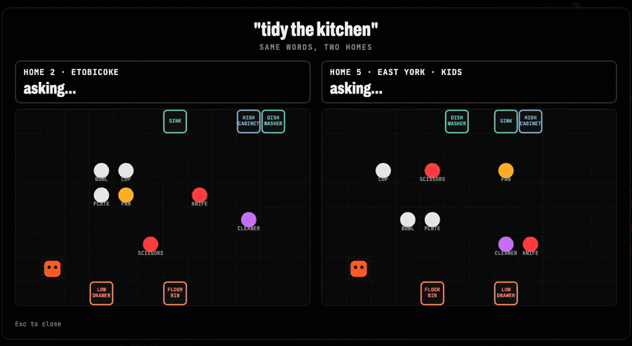
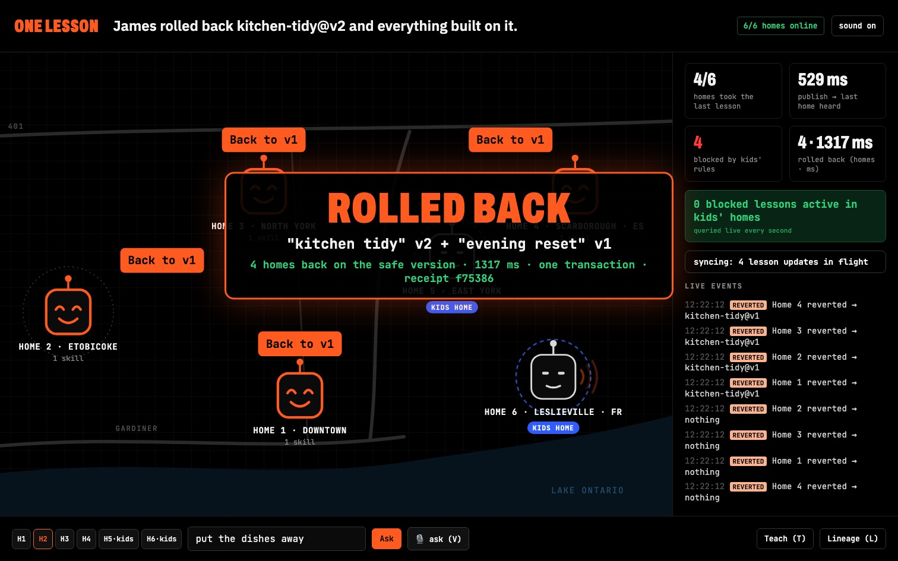
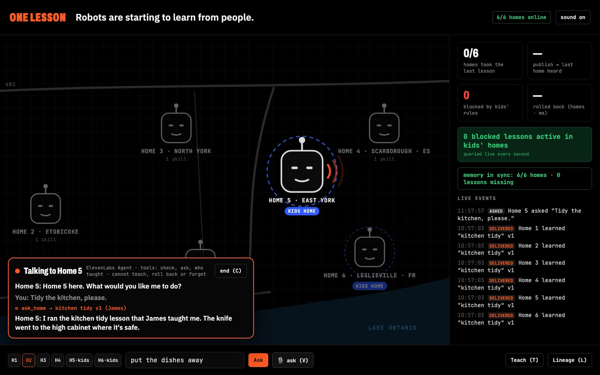

Recorded from a real run against the event's Atlas sandbox. Robot voices, the spoken lesson and the live Home 5 agent are ElevenLabs.
A robot fleet can learn from people safely when every lesson carries its teacher, passes each home's own rules before it spreads, and can be traced and taken back across every home at once. One Lesson is that memory layer, built on MongoDB Atlas, with ElevenLabs as its ears and voices.
Built today, 14 Nov 2026, at Agents in Context Toronto. First commit 10:06 AM.

Say a lesson out loud. ElevenLabs Scribe hears it, a parser in code turns it into steps, and change streams carry it to six homes in under a second.
change streams · resume tokensHomes with kids refuse any lesson that puts a sharp item within a child's reach, and say why, out loud. The rule is code, not a model.
deterministic tags · per-home rulesAsk any robot in English, French, Spanish or Mandarin. Atlas embeds every lesson itself and reranks, then the home's rules decide what it may use.
Automated Embedding · $vectorSearch · $rerank"Who taught you that?" The robot answers from its lesson's family tree and the event log: teacher, parent lesson, homes that took it or refused it.
$graphLookupOne click rolls a bad lesson back, and everything built on it, in one transaction with a receipt. "Forget me" erases a teacher's identity everywhere.
transactions · receipts · TTL · $jsonSchemaHome 5 is a live ElevenLabs agent. Its only tools call our rule check, the home and the lineage. It has no tool to teach, roll back or forget.
ElevenLabs Agents · client tools

Honest limits: the fleet is simulated, and One Lesson governs which skills a fleet shares, not how motors move. Six homes on one laptop server is what we measured. Teacher names are typed and marked unverified in this build; Auth0 is in the code but off.